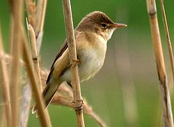
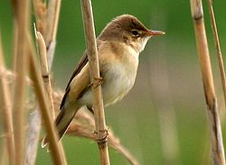

| Eurasian Reed Warbler | |
|---|---|
|  | |
| Conservation status | |
| Binomial name | |
| Acrocephalus scirpaceus (Hermann, 1804) |
| Eurasian Reed Warbler | |
|---|---|
|  | |
| Conservation status | |
| Binomial name | |
| Acrocephalus scirpaceus (Hermann, 1804) |
The Eurasian Reed Warbler, or just Reed Warbler, Acrocephalus scirpaceus, is an Old World warbler in the genus Acrocephalus. It breeds across Europe into temperate western Asia. It is migratory, wintering in sub-Saharan Africa.
This small passerine bird is a species found almost exclusively in reed beds, usually with some bushes. The 3-5 eggs are laid in a basket nest in reeds. The chicks fledge after 10 or 11 days. This species is usually monogamous.[1]
The Reed Warbler is one of the species that are brood parasitised by the Common Cuckoo.
This is a medium-sized warbler, 12.5-14 cm in length. The adult has an unstreaked brown back and buff underparts. The forehead is flattened, and the bill is strong and pointed. The sexes are identical, as with most warblers, but young birds are richer buff below. Like most warblers, it is insectivorous, but will take other small food items including berries.
The song is a slow, chattering jit-jit-jit with typically acrocephaline whistles and mimicry added.

{kind=link}
{kind=link}